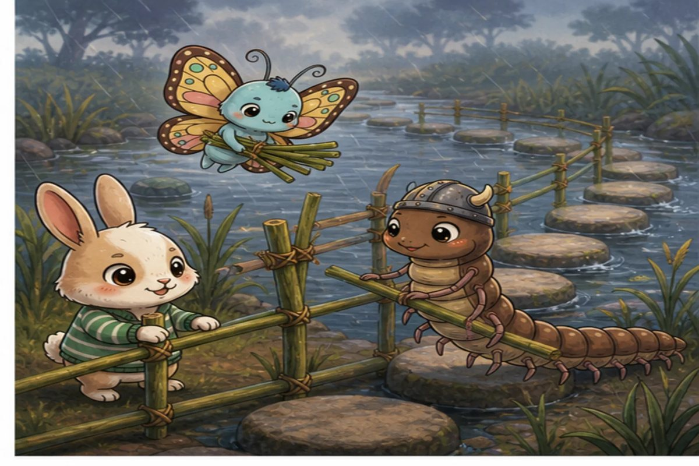
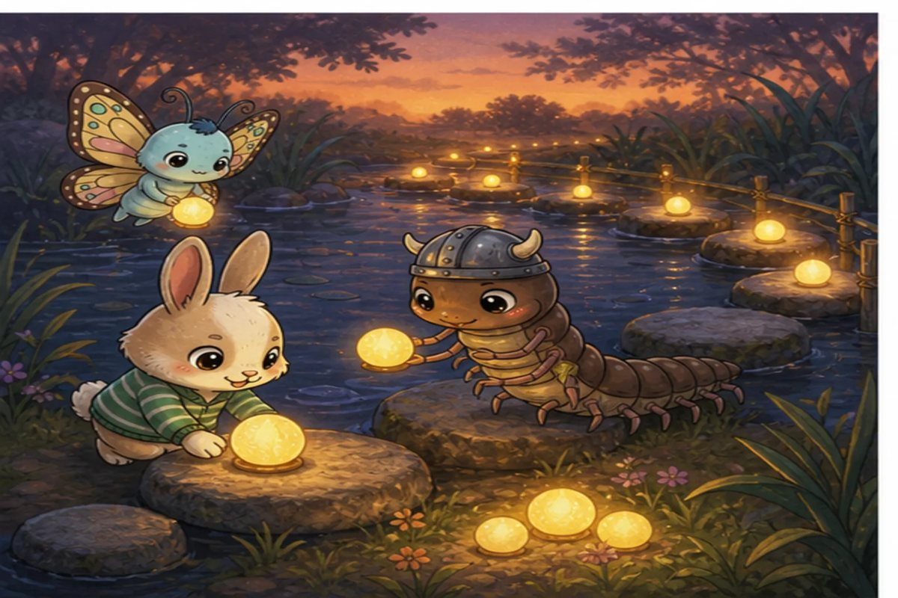
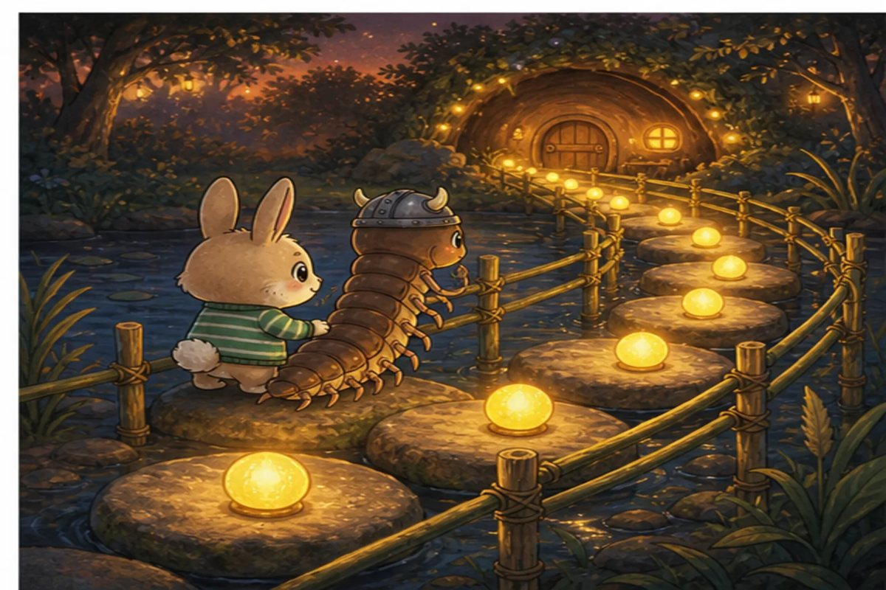

Hop-Tart reaches the pond as the first raindrops dimple the water. A fast current has spun every stepping stone sideways. Hop could leap across alone, but Centi-Peed needs a path with small, even gaps. Together they find three rows with four safe stones in each.
Try it: How many safe stones are in 3 rows of 4?
7
10
12
16
Show the answer
12. Three equal rows of 4 make 4 + 4 + 4 = 12, so 3 × 4 = 12.

Page 2 of 4 · Reeds for Every Rail
The stones are steady, but Centi-Peed’s many little feet need handrails. Flutter-Butter brings 24 strong reed ties. The friends share them equally across six short bridge sections, checking that no section is wobblier than another.
Try it: How many reed ties belong on each of the 6 sections?
3
4
6
8
Show the answer
4. Share 24 into 6 equal groups. Since 6 × 4 = 24, each section gets 4 ties.

Page 3 of 4 · The Three Spare Glow-Seeds
Centi-Peed counts 19 glow-seeds for marking the route. Four seeds fit neatly around each landing stone. After four complete groups, three seeds remain. Hop-Tart starts to call them leftovers, then notices the darkest bend in the path.
Try it: How many complete groups of 4 can they make from 19 seeds?
3
4
5
7
Show the answer
4. Four groups use 4 × 4 = 16 seeds. Three remain, so 19 ÷ 4 makes 4 complete groups with remainder 3.

Page 4 of 4 · A Path That Waits
The three spare seeds light the difficult bend, and two final groups of eight markers glow along the bank. Hop-Tart slows his biggest bounce to match Centi-Peed’s careful steps. They reach shelter together—not by making the fastest path, but by making one that waits for everyone.
Try it: How many markers are in 2 groups of 8?
10
14
16
18
Show the answer
16. Double 8 to find two equal groups: 8 + 8 = 16.
The end · Great maths
Four questions, one story.
Try the story again without peeking, or print it and work the questions on paper. SnackPack Basic Math has the rest of the story shelf, daily practice and number games.